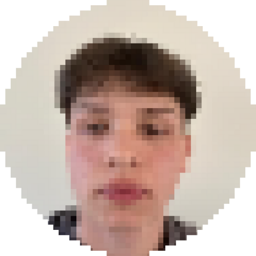
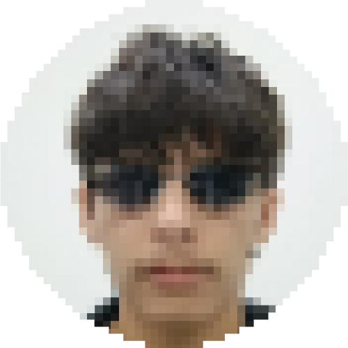
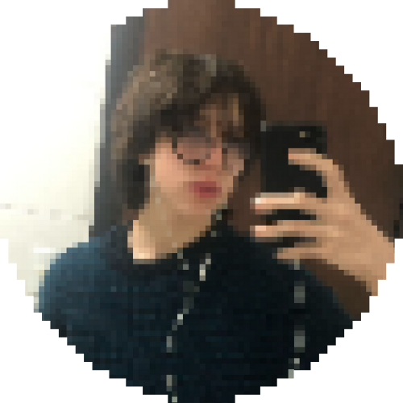
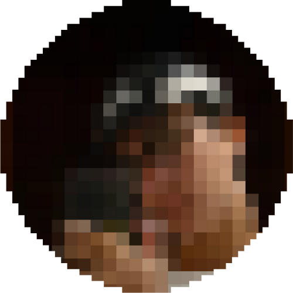

Eternal Nexus
Créditos do Projeto
Equipe Principal

Cunha
Coça Saco dos otros

Bryan
CTO

Yan
Zelador

Prim
Empregado ruim, botei 8 funções e achou ruim

João Santos
Pet
Agradecimentos Especiais
Agradecemos aos professores, orientadores e a todos que contribuíram para fazer deste projeto um sucesso!
Ferramentas Utilizadas
- HTML5, CSS3 e JavaScript
- Express socket.io
- Canvas API e API do DOM
Detalhes do Projeto
Data: 2025-03-23 - Atual
Instituição: Escola SESI - Tijucas